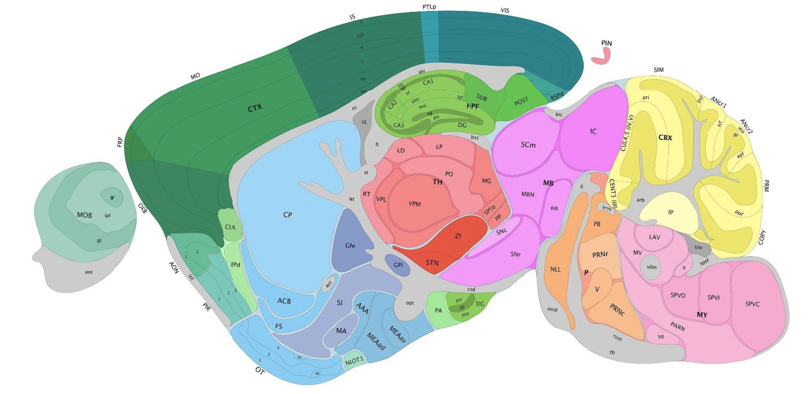
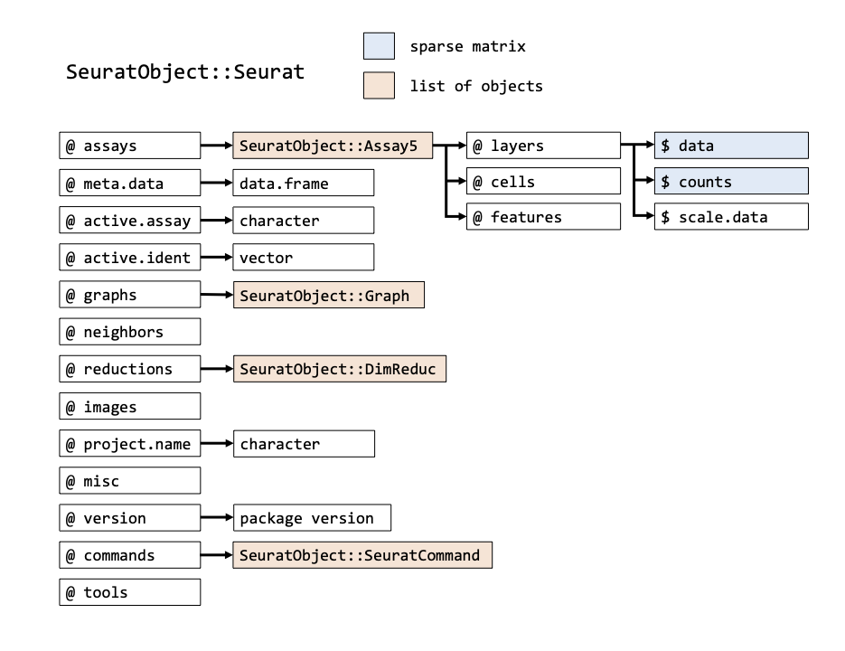
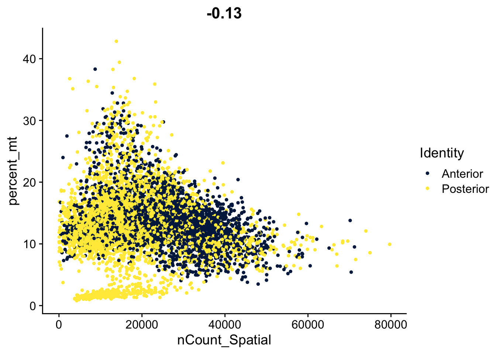
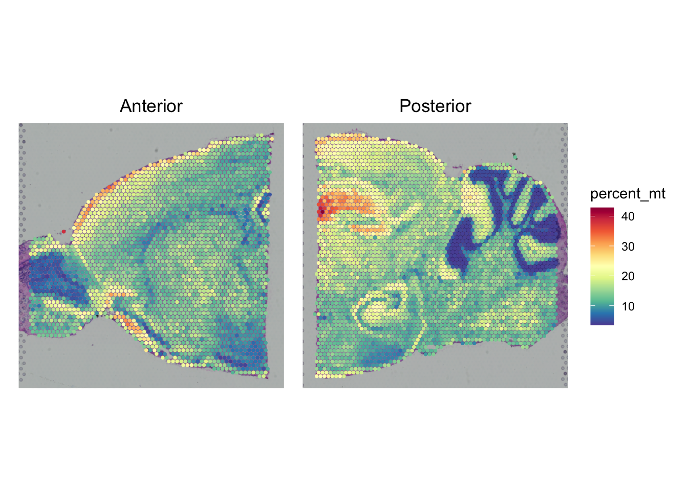
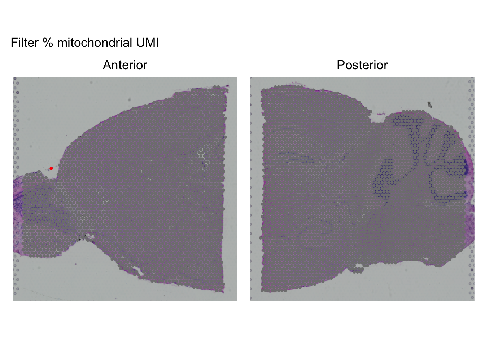
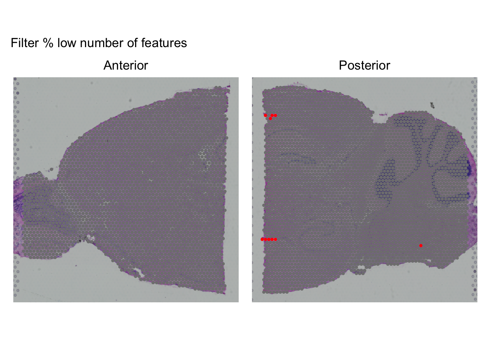
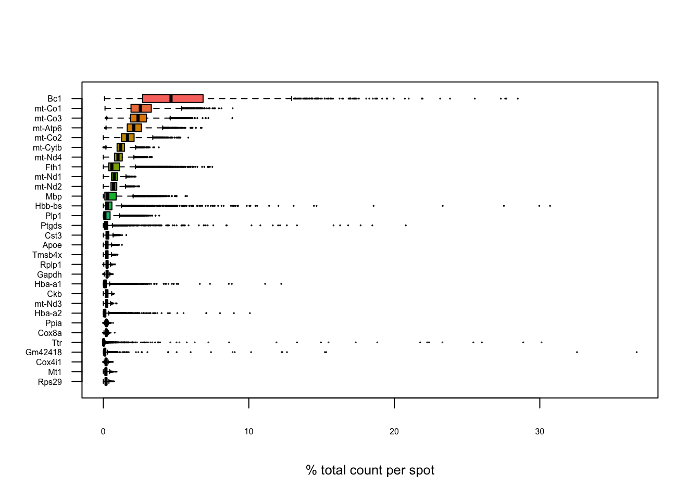

Quality control
Introduction
In this tutorial we are working with two mouse brain slices, the anterior and posterior. The two brain sections represent the sagittal (longitudinal) plane of the mouse brain:

You can find an interactive map with all brain regions at the Allen Brain Atlas
Our slices contain the anterior and posterior sides of the sagittal section of the mouse brain:
Quality reports
In the course_data directories you can find an html report named web_summary.html that gives information about the spaceranger run.
Have a look at both reports. Could we capture the entire slice? Can you expect all spots have reads? How many informative spots do we have for both slices?
- For both the Anterior and Posterior parts of the slice are outside the captured region
- Also not all spots are on a slice, the number of spots per slice:
- Anterior: 2695
- Posterior: 3355
Loading the data into Seurat
We first load the required packages, among which Seurat:
Then we, load the data into two Seurat objects. Here, we loop over the two slices, and combine it in a list of two seurat objects.
seu_list <- lapply(c("Anterior", "Posterior"), function(slice) {
# load the invidual slices
seu <- Load10X_Spatial(data.dir = file.path("course_data", slice),
slice = slice)
# set the identity of the spots to the slice identifier
seu$orig.ident <- slice
return(seu)
})After creating the list, we merge the two objects into one Seurat object, and we set the default identity (mostly for plotting purposes) to the slice identifier (i.e. Posterior or Anterior).
seu <- merge(seu_list[[1]], seu_list[[2]])The Seurat object
The seu object we have created has the class Seurat. The object contains multi-level slots and lists. Each Seurat object contains exactly the same slots that are specified in the image below (get slot descriptions by typing ?SeuratObject::Seurat). You can get the information inside a slot with @, in the same way as you would use the $ for lists (e.g. seu@meta.data will return the a data frame with information on each cell). Slots can be filled with other R objects, like lists, vectors, data frames or any other class. Here’s an overview of all slots that are in a Seurat object:

In addition to the original count table and image, the Seurat object can therefore store a lot of information that is generated during your analysis, like results of a normalization (@assays$RNA@data) a PCA or UMAP (@reductions) and the clustering (@graphs). It also tracks all the commands that have been used to generate the object in its current state (@commands). Therefore, while going through the analysis steps, the same object gets more and more of its slots filled. Because most Seurat functions return the input object + adjusted slots, we can use this syntax:
seurat_object <- Seurat::function(seurat_object)So, the function takes an object as input and we assign it to an object with the same name. Meaning that we overwrite the object used as input. This is fine in many cases, because Seurat adds information to the input object, and returns is.
Because we want to set the default identity of each spot to the slice name (i.e. ‘anterior’ or ‘posterior’), we change the slot active.ident with the function SetIdent:
seu <- SetIdent(seu, value = "orig.ident")In order to check out the count data that is stored in our Seurat object, we can run GetAssayData, in which we specify the assay and the layer from which we extract the counts. Since we have a combined object we have two layers with counts, counts.1 corresponding to Anterior and counts.2 corresponding to Posterior. Let’s have a look at the counts from the Anterior slice:
counts <- GetAssayData(seu, assay = "Spatial", layer = "counts.1")
counts[1:10,1:10]10 x 10 sparse Matrix of class "dgCMatrix" [[ suppressing 10 column names 'AAACAAGTATCTCCCA-1_1', 'AAACACCAATAACTGC-1_1', 'AAACAGAGCGACTCCT-1_1' ... ]]
Xkr4 . . . . . . . . . .
Gm1992 . . . . . . . . . .
Gm19938 . . . . . . . . . .
Gm37381 . . . . . . . . . .
Rp1 . . . . . . . . . .
Sox17 . 1 . . . 2 . . 1 .
Gm37587 . . . . . . . . . .
Gm37323 . . . . . . . . . .
Mrpl15 2 1 4 . 2 1 2 3 . 6
Lypla1 . 1 2 2 . . 1 3 1 3Extract the matrix with counts belonging the posterior slice and get the median counts per spot by using the function colSums and median on the matrix. Does this correspond with the report?
We can get the median counts like this:
counts <- GetAssayData(seu, assay = "Spatial", layer = "counts.2")
median_counts <- colSums(counts) |> median()
median_counts[1] 15783Note that the median counts we have over here, correspond to ‘Median UMI Counts per Spot’ in the report (so not ‘Mean Reads per Spot’). Indeed the also the report shows a median of 15738.
The original H&E slice are also part of the Seurat object, and we can visualize those:
SpatialPlot(seu, alpha = 0) +
plot_layout(guides='collect') & theme(legend.position = "none")And we can plot any feature as an overlay, for example, here we have the number of UMI per spot:
SpatialPlot(seu, features = "nCount_Spatial", pt.size.factor = 2.5) +
plot_layout(guides='collect') & theme(legend.position = "right")Quality control
We can assess the quality of our data at the level of the spots (i.e. the columns in the count matrix) and the genes (the rows). Typically, most quality assessment is done on the level of the spots. Data per spot is stored in the @meta.data slot. This is a data.frame where the rows correspond to the spots, and each column contains data per spot. By loading the data as Seurat object, we have already pre-filled a few meta data columns
Check out the metadata dataframe by running seu@meta.data. Which columns are already there, and what do they probably mean?
seu@meta.data |> head() orig.ident nCount_Spatial nFeature_Spatial
AAACAAGTATCTCCCA-1_1 Anterior 13991 4462
AAACACCAATAACTGC-1_1 Anterior 39797 8126
AAACAGAGCGACTCCT-1_1 Anterior 29951 6526
AAACAGCTTTCAGAAG-1_1 Anterior 42333 8190
AAACAGGGTCTATATT-1_1 Anterior 35700 8090
AAACATGGTGAGAGGA-1_1 Anterior 22148 6518Here, we have the following information:
- rownames: spot barcode (= identifier)
-
orig.ident: the slice identifier -
nCount_Spatial: the total number of UMI for each spot -
nFeature_Spatial: the total number of detected genes per spot
Library size versus detected genes
We can use these columns to plot spot metadata. Everytime there is a function in Seurat that contains an option feature we can fill it out, like in FeatureScatter, that we can use to plot the number of genes versus the number of UMI.
FeatureScatter(seu,
feature1 = "nCount_Spatial",
feature2 = "nFeature_Spatial",
shuffle = TRUE
) + scale_color_viridis_d(option = "cividis")Percent of mitochondrial UMI
A high percentage of mitochondrial UMI can point to low quality spots, because damaged cells typically leak out cytoplasmic mRNA, while the mitochondria stay inside. We can calculate the percentage of mitochondria like this:
seu <- PercentageFeatureSet(seu,
pattern = "^MT-|^Mt-|^mt-",
col.name = "percent_mt"
)The percentage of mitochondrial UMI is stored in the @meta.data slot. What is the name of the column?
Plot the percentage of mitochondrial UMI versus the number of UMI per spot with FeatureScatter.
A column names percent_mt appeared.
head(seu@meta.data) orig.ident nCount_Spatial nFeature_Spatial percent_mt
AAACAAGTATCTCCCA-1_1 Anterior 13991 4462 10.871274
AAACACCAATAACTGC-1_1 Anterior 39797 8126 9.993216
AAACAGAGCGACTCCT-1_1 Anterior 29951 6526 14.239925
AAACAGCTTTCAGAAG-1_1 Anterior 42333 8190 6.779581
AAACAGGGTCTATATT-1_1 Anterior 35700 8090 5.128852
AAACATGGTGAGAGGA-1_1 Anterior 22148 6518 10.791042We can create the scatterplot like this:
FeatureScatter(seu,
feature1 = "nCount_Spatial",
feature2 = "percent_mt",
shuffle = TRUE
) + scale_color_viridis_d(option = "cividis")
Now we have to decide whether we want to filter away spots with high mitochondrial counts, and if so, at what threshold. In order to make a decision, it makes sense to plot the mitochondrial counts in a spatial context, so we can check whether it correpsonds to spatial features:
SpatialPlot(seu, features = "percent_mt", pt.size.factor = 2.5) +
plot_layout(guides='collect') & theme(legend.position = "right")
We can see that a high percentage of mitochondrial counts correspond with the hippocampus, and the sides of the out areas of the cortex. In the posterior slice, there is a clear spatial context and there is no clear indication for spots being damaged, we will not filter out spots based on mitochondrial UMI. However, in the Anterior slice, we see a spot outside the main area (just above the olfactory bulb) that seems to have ended up there because of debris.
Filtering
Identifying low-quality spots
We decide to filter out the spot that is high in UMI counts in the Anterior slice and in addition, we will filter spots that have fewer than 500 genes expressed. In order to visualize the spots we create two more columns in the @meta.data slot that represent which cell are filtered out. s
# defining the high mt spot in anterior
seu$percent_mt_keep <- !(seu$orig.ident == "Anterior" & seu$percent_mt > 38)
cells_mt_keep <- colnames(seu)[seu$percent_mt_keep]
SpatialPlot(seu, cells.highlight = cells_mt_keep,
cols.highlight = c("grey50", "red"),
pt.size.factor = 2.5) +
plot_annotation(title = "Filter % mitochondrial UMI") +
plot_layout(guides='collect') & theme(legend.position = "none") 
# defining the low number of genes
seu$nFeature_Spatial_keep <- seu$nFeature_Spatial > 100
cells_nfeature_keep <- colnames(seu)[seu$nFeature_Spatial_keep]
SpatialPlot(seu, cells.highlight = cells_nfeature_keep,
cols.highlight = c("grey50", "red"),
pt.size.factor = 2.5) +
plot_annotation(title = "Filter % low number of features") +
plot_layout(guides='collect') & theme(legend.position = "none") 
Now, we remove the spots, and visualize the spots that are left over:
seu <- seu[, seu$percent_mt_keep & seu$nFeature_Spatial_keep]Warning: Not validating Centroids objects
Not validating Centroids objectsWarning: Not validating FOV objects
Not validating FOV objects
Not validating FOV objects
Not validating FOV objects
Not validating FOV objects
Not validating FOV objectsWarning: Not validating Seurat objectsWarning: Not validating Centroids objects
Not validating Centroids objectsWarning: Not validating FOV objects
Not validating FOV objects
Not validating FOV objects
Not validating FOV objects
Not validating FOV objects
Not validating FOV objectsWarning: Not validating Seurat objectsSpatialPlot(seu, alpha = 0.5, group.by = "percent_mt_keep") +
plot_layout(guides='collect') & theme(legend.position = "none")Gene-level QC
Some genes can be expressed in very high percentages and therefore have a large effect on the normalization. In order to see whether there are genes that are very high expressed we can plot them by percentage of the total counts per spot:
most_expressed_boxplot <- function(raw_counts) {
raw_counts@x <-
raw_counts@x / rep.int(colSums(raw_counts), diff(raw_counts@p)) * 100
most_expressed <-
order(Matrix::rowSums(raw_counts), decreasing = TRUE)[30:1]
raw_counts[most_expressed,] |>
as.matrix() |>
t() |>
boxplot(
cex.axis = 0.5,
cex.lab = 0.8,
cex = 0.1,
las = 1,
xlab = "% total count per spot",
col = (scales::hue_pal())(30)[30:1],
horizontal = TRUE
)
}
most_expressed_boxplot(seu[["Spatial"]]$counts.1)most_expressed_boxplot(seu[["Spatial"]]$counts.2)
As we don’t see very high expression percentages, and it happens for expected genes (e.g. Bc1), we decide to keep all genes in the analysis.
After quality control, we can save the output as an rds files:
output_folder <- "output"
dir.create(output_folder, showWarnings = FALSE)
saveRDS(seu,
paste0("output/seu_part2.rds"))